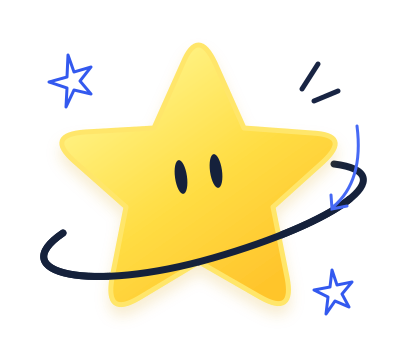

ТВОЯ СРЕДА. ТВОИ ПЕРЕМЕНЫ.
А что, если
сделать лучше?
Есть проблема? Есть идея? Давай превратим её
в реальные изменения вместе.

Твоя идея
может стать
реальностью!
ИДЕИ, КОТОРЫЕ МЕНЯЮТ НАШ МИР
Лента идей
Загружаем идеи…
Вместе мы можем сделать наше пространство лучше.
Предлагай идеи, поддерживай других и следи за изменениями!
Как это работает?
Простой путь от идеи до реальных изменений.
важна! ↙
1 Предложи идею
Опиши проблему
и предложи решение.
2 Поддержи других
Голосуй за идеи,
которые тебе нравятся.
3 Мы рассмотрим
Модератор рассмотрит идею
и объяснит решение.
4 Реальные изменения
Следи за статусом
и результатом.